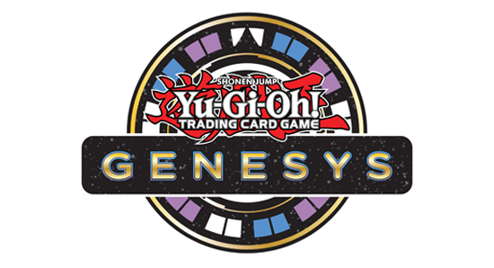

For this page I will be looking at different formats that you maybe interested in after familiarizing yourself with the game and want something new. For now I will be goint throught 3 different formats that maybe of some interest to you.
Alternate Formats:
Format 1: Common Charity
To start with a not too different format I chose common charity which will have all modern card and all the same rules with the only difference being in the rarity of the cards being played. The rarity of te card is dependent the the foiling where rarity goes frome common, rare, super rare, ultra rare, secret rare, and many other different types of rarities with the one we want is commons as those are the only playable cards in this format. The reason why this format is interesting is because of konami's reprint policies where it is fairly common for them to eventually reprint high rarity cards into lower rarities which once they are printed into common rarity they become legal to play.
Format 2: Time Wizard Format

Source of Image: here
For this format it would be up to the local that is hosting the event where they would be able to host the game where the cards that ae playable depending on what time they want to play in where they can decide on what year and month they want to play as with it following the cards released, ban list, and rules that may be different from the modern format. For this format it is a very different experience than modern especially with the rules as the rules have changed in some aspects such as priority being one where the oponent would have priority to use their cards if able to where in more modern formats it is priority for the turn player. Additionally with a change in banlist it also allows for you to play with cards that you weren't allowed to as some cards have been banned for a long time.
Format 3: Genesys

Source of Image: here
This last format I would say is the most supported as it is the newest one where for this format it has all the cards as the regular format but for this format there is no banlist with the only thing preventing you from playing some cards is the points allocated to them where for most games the max amount of points is 100 but depending on the person hosting the event they could change the points that you are allowed to use. The appeal of this format is the restrictions that it offers as many of the modern cards are pointed and with those points the decks are not able to be played optimally. Additionally there are certain card typrd just not allowed to be played those bing link monster and pendulums which are the 2 most recent summoning mechanic. With these 2 mechanics not being able to be used there are plenty of decks that are just not usable due to cards not being able to be used. With these restritions there are many decks that wouldn't have seen play able to be played.
Where to go from here:
Now this is the end of my website and from here you have options which are:
- Introduction to Yu-Gi-Oh: You can go back to this part of the website in order to look back at the rules and to make sure that you are following the rules. Additionally you can look back at this if the rules stay the same for some the formats mentioned.
- Play Online Simulators: So now that you have learned to play Yu-Gi-Oh and have learned about different formats you can look at various online simulators where there are official ones such as master duel which has a lot of cards with it having a gem system to be able to build your decks. There are also online simulator which are free and have all the cards available but these aren't officially supported and instead are community supported.